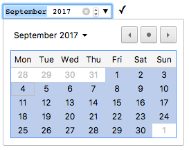
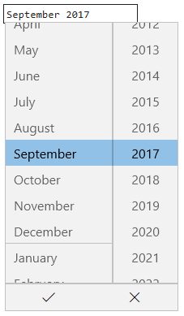
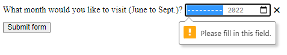

<input type="month">
<input> elements of type month create input fields that let the user enter a month and year allowing a month and year to be easily entered.
The value is a string whose value is in the format "YYYY-MM", where YYYY is the four-digit year and MM is the month number.
Try it
The control's UI varies in general from browser to browser; at the moment support is patchy, with only Chrome/Opera and Edge on desktop — and most modern mobile browser versions — having usable implementations.
In browsers that don't support month inputs, the control degrades gracefully to a simple <input type="text">, although there may be automatic validation of the entered text to ensure it's formatted as expected.
For those of you using a browser that doesn't support month, the screenshot below shows what it looks like in Chrome and Opera.
Clicking the down arrow on the right-hand side brings up a date picker that lets you select the month and year.

The Microsoft Edge month control looks like this:

Value
A string representing the value of the month and year entered into the input, in the form YYYY-MM (four or more digit year, then a hyphen ("-"), followed by the two-digit month).
The format of the month string used by this input type is described in Month strings.
Setting a default value
You can set a default value for the input control by including a month and year inside the value attribute, like so:
<label for="bday-month">What month were you born in?</label>
<input id="bday-month" type="month" name="bday-month" value="2001-06" />
One thing to note is that the displayed date format differs from the actual value; most user agents display the month and year in a locale-appropriate form, based on the set locale of the user's operating system, whereas the date value is always formatted yyyy-MM.
When the above value is submitted to the server, for example, it will look like bday-month=1978-06.
Setting the value using JavaScript
You can also get and set the date value in JavaScript using the HTMLInputElement.value property, for example:
<label for="bday-month">What month were you born in?</label>
<input id="bday-month" type="month" name="bday-month" />
const monthControl = document.querySelector('input[type="month"]');
monthControl.value = '2001-06';
Additional attributes
In addition to the attributes common to <input> elements, month inputs offer the following attributes.
list
The values of the list attribute is the id of a <datalist> element located in the same document.
The <datalist> provides a list of predefined values to suggest to the user for this input.
Any values in the list that are not compatible with the type are not included in the suggested options.
The values provided are suggestions, not requirements: users can select from this predefined list or provide a different value.
max
The latest year and month, in the string format discussed in the Value section above, to accept.
If the value entered into the element exceeds this, the element fails constraint validation.
If the value of the max attribute isn't a valid string in "yyyy-MM" format, then the element has no maximum value.
This value must specify a year-month pairing later than or equal to the one specified by the min attribute.
min
The latest year and month to accept, in the same "yyyy-MM" format described above.
If the value of the element is less than this, the element fails constraint validation.
If a value is specified for min that isn't a valid year and month string, the input has no minimum value.
This value must be a year-month pairing which is earlier than or equal to the one specified by the max attribute.
readonly
A Boolean attribute which, if present, means this field cannot be edited by the user.
Its value can, however, still be changed from JavaScript code that directly sets the value of the HTMLInputElement.value property.
Note: Because a read-only field cannot have a value, required does not have any effect on inputs with the readonly attribute also specified.
step
The step attribute is a number that specifies the granularity that the value must adhere to, or the special value any, which is described below.
Only values which are equal to the basis for stepping (min if specified, value otherwise, and an appropriate default value if neither of those is provided) are valid.
A string value of any means that no stepping is implied, and any value is allowed (barring other constraints, such as min and max).
Note: When the data entered by the user doesn't adhere to the stepping configuration, the user agent may round to the nearest valid value, preferring numbers in the positive direction when there are two equally close options.
For month inputs, the value of step is given in months, with a scaling factor of 1 (since the underlying numeric value is also in months).
The default value of step is 1 month.
Using month inputs
Date-related inputs (including month) sound convenient at first glance; they promise an easy UI for choosing dates, and they normalize the data format sent to the server, regardless of the user's locale.
However, there are issues with <input type="month"> because at this time, many major browsers don't yet support it.
We'll look at basic and more complex uses of <input type="month">, then offer advice on mitigating the browser support issue in the section Handling browser support).
Basic uses of month
Setting maximum and minimum dates
You can use the min and max attributes to restrict the range of dates that the user can choose.
In the following example we specify a minimum month of 1900-01 and a maximum month of 2013-12:
<form>
<label for="bday-month">What month were you born in?</label>
<input
id="bday-month"
type="month"
name="bday-month"
min="1900-01"
max="2013-12" />
</form>
The result here is that:
- Only months between in January 1900 and December 2013 can be selected; months outside that range can't be scrolled to in the control.
- Depending on what browser you are using, you might find that months outside the specified range might not be selectable in the month picker (e.g. Edge), or invalid (see Validation) but still available (e.g. Chrome).
Controlling input size
Validation
By default, <input type="month"> does not apply any validation to entered values.
The UI implementations generally don't let you enter anything that isn't a date — which is helpful — but you can still submit the form with the month input empty, or enter an invalid date (e.g. the 32nd of April).
To help avoid this, you can use min and max to restrict the available dates (see Setting maximum and minimum dates), and in addition use the required attribute to make filling in the date mandatory.
As a result, supporting browsers will display an error if you try to submit a date that is outside the set bounds, or an empty date field.
Let's look at an example; here we've set minimum and maximum dates, and also made the field required:
<form>
<div>
<label for="month">
What month would you like to visit (June to Sept.)?
</label>
<input
id="month"
type="month"
name="month"
min="2022-06"
max="2022-09"
required />
<span class="validity"></span>
</div>
<div>
<input type="submit" value="Submit form" />
</div>
</form>
If you try to submit the form without both the month and year specified (or with a date outside the set bounds), the browser displays an error. Try playing with the example now:
Here's a screenshot for those of you who aren't using a supporting browser:

Here's the CSS used in the above example.
Here we make use of the :valid and :invalid CSS properties to style the input based on whether the current value is valid.
We had to put the icons on a <span> next to the input, not on the input itself, because in Chrome the generated content is placed inside the form control, and can't be styled or shown effectively.
div {
margin-bottom: 10px;
position: relative;
}
input[type="number"] {
width: 100px;
}
input + span {
padding-right: 30px;
}
input:invalid + span::after {
position: absolute;
content: "✖";
padding-left: 5px;
}
input:valid + span::after {
position: absolute;
content: "✓";
padding-left: 5px;
}
Warning: HTML form validation is not a substitute for scripts that ensure that the entered data is in the proper format. It's far too easy for someone to make adjustments to the HTML that allow them to bypass the validation, or to remove it entirely. It's also possible for someone to bypass your HTML entirely and submit the data directly to your server. If your server-side code fails to validate the data it receives, disaster could strike when improperly-formatted data is submitted (or data which is too large, of the wrong type, and so forth).
Handling browser support
As mentioned above, the major problem with using date inputs at the time of writing is that many major browsers don't yet implement them all; only Chrome/Opera and Edge support it on desktop, and most modern browsers on mobile.
As an example, the month picker on Chrome for Android looks like this:
Non-supporting browsers gracefully degrade to a text input, but this creates problems both in terms of consistency of user interface (the presented control will be different), and data handling.
The second problem is the more serious of the two.
As mentioned earlier, with a month input the actual value is always normalized to the format yyyy-mm.
On the other hand, in its default configuration, a text input has no idea what format the date should be in, and this is an issue because of the number of different ways in which people write dates.
For example:
mmyyyy(072022)mm/yyyy(07/2022)mm-yyyy(07-2022)yyyy-mm(2022-07)Month yyyy(July 2022)- and so forth…
One way around this is to put a pattern attribute on your month input.
Even though the month input doesn't use it, if the browser falls back to treating it like a text input, the pattern will be used.
For example, try viewing the following demo in a browser that doesn't support month inputs:
<form>
<div>
<label for="month">
What month would you like to visit (June to Sept.)?
</label>
<input
id="month"
type="month"
name="month"
min="2022-06"
max="2022-09"
required
pattern="[0-9]{4}-[0-9]{2}" />
<span class="validity"></span>
</div>
<div>
<input type="submit" value="Submit form" />
</div>
</form>
If you try submitting it, you'll see that the browser now displays an error message (and highlights the input as invalid) if your entry doesn't match the pattern nnnn-nn, where n is a number from 0 to 9.
Of course, this doesn't stop people from entering invalid dates (such as 0000-42), or incorrectly formatted dates that follow the pattern.
There's also the problem that the user won't necessarily know which of the many date formats is expected. We have work left to do.
The best way to deal with dates in forms in a cross-browser way (until all major browsers have supported them for a while) is to get the user to enter the month and year in separate controls (<select> elements being popular; see below for an implementation), or use JavaScript libraries such as the jQuery date picker plugin.
Examples
In this example, we create two sets of UI elements, each designed to let the user select a month and year.
The first is a native month input, and the other is a pair of <select> elements that allow choosing a month and year independently, for compatibility with browsers that don't yet support <input type="month">.
HTML
The form that requests the month and year looks like this:
<form>
<div class="nativeDatePicker">
<label for="month-visit">What month would you like to visit us?</label>
<input type="month" id="month-visit" name="month-visit" />
<span class="validity"></span>
</div>
<p class="fallbackLabel">What month would you like to visit us?</p>
<div class="fallbackDatePicker">
<div>
<span>
<label for="month">Month:</label>
<select id="month" name="month">
<option selected>January</option>
<option>February</option>
<option>March</option>
<option>April</option>
<option>May</option>
<option>June</option>
<option>July</option>
<option>August</option>
<option>September</option>
<option>October</option>
<option>November</option>
<option>December</option>
</select>
</span>
<span>
<label for="year">Year:</label>
<select id="year" name="year"></select>
</span>
</div>
</div>
</form>
The <div> with the ID nativeDatePicker uses the month input type to request the month and year, while the <div> with the ID fallbackDatePicker instead uses a pair of <select> elements.
The first requests the month, and the second the year.
The <select> for choosing the month is hardcoded with the names of the months, as they don't change (leaving localization out of things).
The list of available year values is dynamically generated depending on the current year (see the code comments below for detailed explanations of how these functions work).
JavaScript
The JavaScript code that handles selecting which approach to use and to set up the list of years to include in the non-native year <select> follows.
The part of the example that may be of most interest is the feature detection code.
In order to detect whether the browser supports <input type="month">, we create a new <input> element, try setting its type to month, then immediately check what its type is set to.
Browsers that don't support type month will return text, since that's What month falls back to when not supported.
If <input type="month"> is not supported, we hide the native picker and show the fallback picker UI instead.
// Get UI elements
const nativePicker = document.querySelector('.nativeDatePicker');
const fallbackPicker = document.querySelector('.fallbackDatePicker');
const fallbackLabel = document.querySelector('.fallbackLabel');
const yearSelect = document.querySelector('#year');
const monthSelect = document.querySelector('#month');
// Hide fallback initially
fallbackPicker.style.display = 'none';
fallbackLabel.style.display = 'none';
// Test whether a new date input falls back to a text input or not
const test = document.createElement('input');
try {
test.type = 'month';
} catch (e) {
console.log(e.description);
}
// If it does, run the code inside the if () {} block
if (test.type === 'text') {
// Hide the native picker and show the fallback
nativePicker.style.display = 'none';
fallbackPicker.style.display = 'block';
fallbackLabel.style.display = 'block';
// Populate the years dynamically
// (the months are always the same, therefore hardcoded)
populateYears();
}
function populateYears() {
// Get the current year as a number
const date = new Date();
const year = date.getFullYear();
// Make this year, and the 100 years before it available in the year <select>
for (let i = 0; i <= 100; i++) {
const option = document.createElement('option');
option.textContent = year - i;
yearSelect.appendChild(option);
}
}
Note: Remember that some years have 53 weeks in them (see Weeks per year)! You'll need to take this into consideration when developing production apps.
Technical summary
| Value | A string representing a month and year, or empty. |
| Events |
change and
input
|
| Supported common attributes |
autocomplete,
list,
readonly, and
step.
|
| IDL attributes | value |
| DOM interface | |
| Methods |
select(),
stepDown(),
stepUp().
|
| Implicit ARIA Role | no corresponding role |
Specifications
| Specification |
|---|
| HTML Standard # month-state-(type=month) |
Browser compatibility
| desktop | mobile | ||||||||||
|---|---|---|---|---|---|---|---|---|---|---|---|
type="month" | |||||||||||
See also
- The generic
<input>element and the interface used to manipulate it,HTMLInputElement - Date and time formats used in HTML
- Date and Time picker tutorial
<input type="datetime-local">,<input type="date">,<input type="time">, and<input type="week">- Compatibility of CSS properties